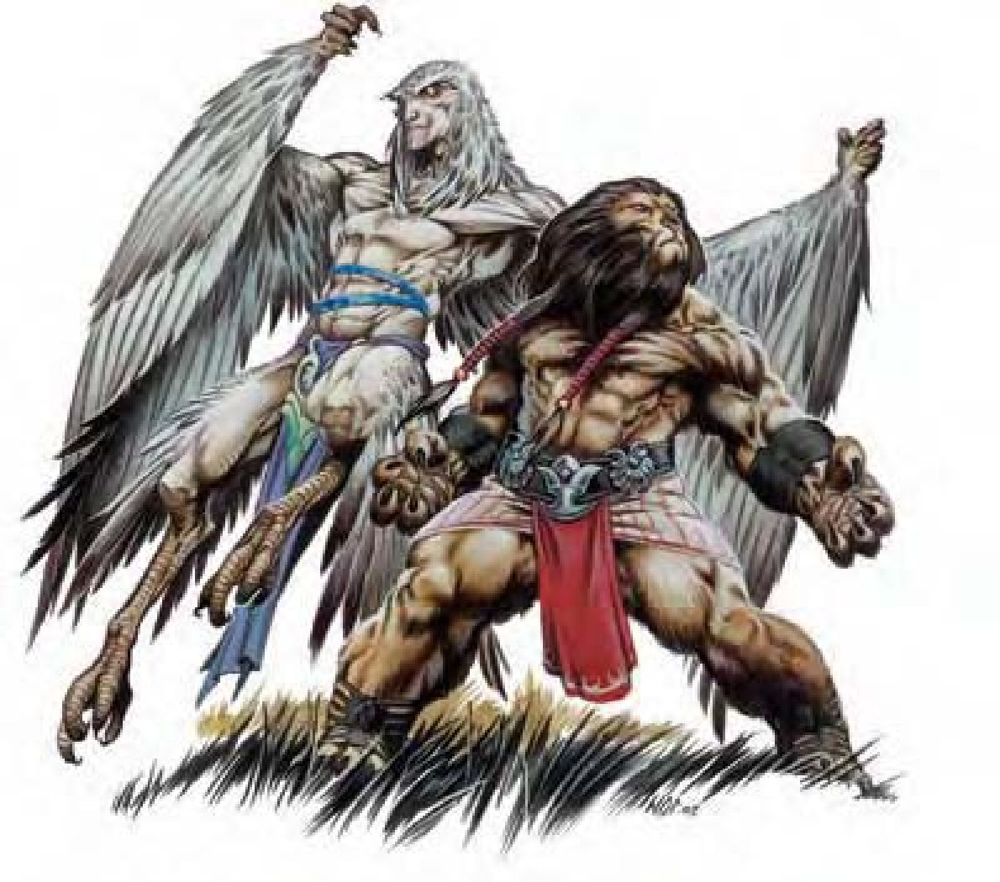

这种生物体型近似于高而结实的人类，他有一对强壮的翅膀而非手臂，脑袋虽然比较像人，头发却像是由鸟羽构成的风帽，眼睛则为纯金色；其它同样被有羽片，末端为强壮的爪勾。
盖丁天族Guardinal是原生于极乐界的天界种族。在原属界域他们是最温和的生物，开朗不易怒。然而当远离极乐界时，他们会表现出相当不同的一面。盖丁天族无法容忍邪恶，常在宇宙间徘徊打击邪恶事物。
盖丁天族通晓天界语、炼狱语与龙语。盖丁天族还拥有巧言能力，几乎可和任何生物沟通。
盖丁天族特性：盖丁天族具有以下特性（除非个别叙述中另有说明）：
― 黑暗视觉可达60英尺、昏暗视觉。
― 对电击与石化免疫。
― 寒冷抗力10、音波抗力10。
― 圣疗（超自然）：同圣武士的职业特性，但盖丁天族每日可医疗的伤害值等于其最大生命值。
― 对抗毒素的豁免检定有+4种族加值。
― 动物交谈（超自然）：效果相当于同名法术（施法者等级8），但使用此能力为即时动作，也无须出声。
鹏羽神侍身高约7英尺，有着强壮但中空的骨骼，因此即使是最大型的鹏羽神侍体重也不超过120磅。
鹏羽神侍的双翅中段长有一只小手。当翅膀收合，这只手的位置就相当于正常人类的手部，功能上也几乎与人类双手相同。
鹏羽神侍拥有无与伦比的敏锐视力，可以看见远在10英里外物品上的细节或是分辨某个距离他200步外的某生物瞳色。
| 资料栏位 | 鹏羽神侍 (Avoral) 中型异界生物 (外界、善良、盖丁) |
| 生命骰 | 7d8+35 (66HP) |
| 先攻 | +6 |
| 速度 | 40英尺 (8格)、飞行90英尺 (良好) |
| 防御等级 | 24 (+6敏捷、+8天生)、接触16、措手不及18 |
| 基本攻击/擒抱 | +7 / +9 |
| 攻击 | 爪抓+13近战 (2d6+2)；或翼击+13近战 (2d8+2) |
| 全力攻击 | 2爪抓+13近战 (2d6+2)；或2翼击+13近战 (2d8+2) |
| 占据/触及 | 5英尺 / 5英尺 |
| 特殊攻击 | 类法术能力、恐惧灵光 |
| 特殊能力 | 伤害减免10 / 邪恶或银、黑暗视觉60英尺、对电击与石化免疫、圣疗、昏暗视觉、寒冷抗力10、音波抗力10、动物交谈、法术抗力25、真实目光 |
| 豁免 | 强韧+10 (对抗毒素+14)、反射+11、意志+8 |
| 属性 | 力量15、敏捷23、体质20、智力15、感知16、魅力16 |
| 技能 | 唬骗+13、专注+15、交涉+7、易容+3 (扮演+5)、驯养动物+13、躲藏+16、威吓+5、知识 (任二) +12、聆听+13、潜行+16、骑术+8、察言观色+13、法术辨识+12、侦察+21 |
| 专长 | 类法术能力强效 (“魔法飞弹”)、空袭、武器娴熟 |
| 环境 | 极乐至福界 |
| 组织 | 单独、成双或中队 (3-5) |
| 宝藏 | 无钱币、双倍宝物、标准物品 |
| 阵营 | 总是中立善良 |
| 进化 | 8-14HD (中型)；15-21HD (大型) |
| 等级修正值 | ― |
在地面时，鹏羽神侍可使用双翼猛击敌人，但他们偏好在空中作战，如此不但可以使用双爪，也才能完全发挥其空速速度与敏捷优势。然而飞行时无法使用翼击。
在计算伤害减免时，鹏羽神侍的天生武器与持有武器都视为善良阵营。
类法术能力：随意施展――“援助术”、“朦胧术” (只对自身有效)、“命令术” (DC=14)、“侦测魔法”、“任意门”、“解除魔法”、“造风术” (DC=15)、“人类定身术” (DC=16)、“光亮术”、“反邪恶法阵” (只对自身有效)、“魔法飞弹”、“识破隐形”；每天3次――“闪电束” (DC=16)。施法者等级8。豁免检定DC的调整值与魅力调整值相同。
恐惧灵光 (超自然)：鹏羽神侍可以制造出半径20英尺的恐惧灵光，每天1次。效果等于施法者等级8 (DC=17) 的“恐惧术”。豁免检定DC的调整值与魅力调整值相同。
真实目光 (超自然)：效果相当于同名法术 (施法者等级14)，但范围仅限一人，且鹏羽神侍必须专注一整轮才能开始生效。之后只要鹏羽神侍维持专注，效果即可持续。
技能：由于其敏锐的视力，鹏羽神侍在进行“侦察”检定时具有+8种族加值。